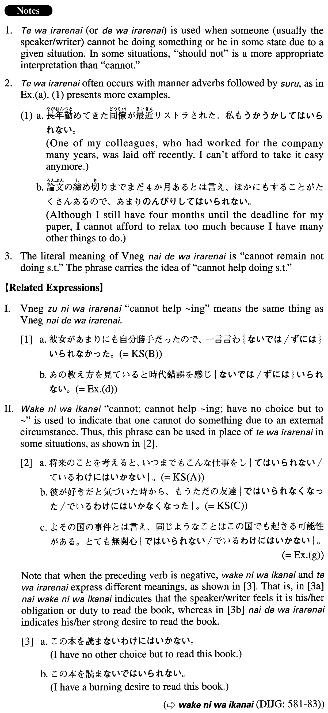

←
DoJG
→
てはいられない
(A. 609)
Example sentences
(ksa).
将来のことを考えると、いつまでもこんな仕事をし
てはいられない
。
When I think about the future, (I realise) I can't keep doing this kind of work forever.
(ksb).
彼女があまりにも自分勝手だったので、一言言わない
ではいられなかった
。
Because she was acting so selfishly, I couldn't resist saying something to her.
(ksc).
彼が好きだと気づいた時から、もうただの友達
ではいられなくなった
。
Once I realised that I loved him, I couldn't be just a friend anymore.
(a).
もうすぐ飛行機が出るのでぐずぐずし
てはいられない
。
My plane is departing soon, so I cannot afford to dawdle.
(b).
やることがたくさんあるのでパーティーなんかに行っ
てはいられない
。
I have so many things to do that I can't spend my time going to parties.
(c).
自分にも同じ口癖があるので人のことを笑っ
てはいられない
。
I have the same speech habits, so I can't afford to laugh at other people.
(d).
あの教え方を見ていると時代錯誤を感じない
ではいられない
。
When I see that teaching method, I can't help thinking how outdated it is.
(e).
忙しい時代に生まれ、時間に追われがちな今の子供たちを案じない
ではいられない
。
I cannot help being concerned about today's children, who were born in such a busy age and who tend to be pressed for time.
(f).
私は一日も本なし
ではいられない
。
I can't go even a day without books.
(g).
よその国の事件とは言え、同じようなことはこの国でも起きる可能性がある。とても無関心
ではいられない
。
Although that incident was in another country, it could happen in this country, too. I simply can't remain indifferent.
(h).
彼女は日本中のみんなに期待されているので、もう普通の選手
ではいられなくなった
。
With Japan's hopes riding on her, she can no longer be just an ordinary player.
(i).
地球環境は急速に悪化している。いつまでもこのまま
ではいられない
。
The earth's environment is worsening rapidly. We just can't continue to do nothing.
Formation
(i)
Verb
てはいられない
寝
てはいられない
Cannot stay in bed
(ii)
Vnegative
ではいられない
話さない
ではいられない
Cannot keep from talking
(iii)
{Adjectiveなstem/ Noun}
ではいられない
平静
ではいられない
Cannot remain calm
いつまでも子供
ではいられない
Cannot be a child forever
